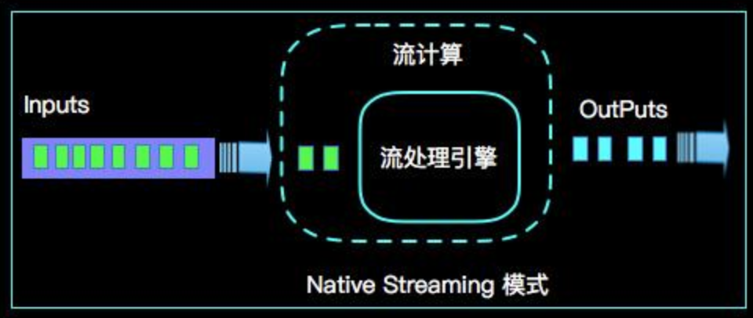

1.1 大数据与Apache Flink的渊源
追本溯源
在全面了解Apache Flink(后续简称 Flink)核心功能之前，我们内心往往会有一些疑问需要被解答，比如：Flink是在什么背景下诞生的？我为什么要学习Flink？Flink的发展历程是怎样的？总之我们要对任何技术和知识保持追其根本，探其源头的精神，最终达到知其然，知其所以然！
大数据(Big Data)
数据量与日俱增
随着云计算、物联网、人工智能等信息技术的快速发展，数据量呈现几何级增长，我们先看一份预测数据，全球数据总量在短暂的10年时间会由16.1ZB增长到163ZB，数据量的快速增长已经远远超越单个计算机存储和处理能力，如下：

上图我们数据量的单位是ZB，我们简单介绍一下数据量的统计单位，基本单位是bit，按顺序给出所有单位：bit、Byte、KB、MB、GB、TB、PB、EB、ZB、YB、BB、NB、DB。他们之间的转换关系是：
- 1 Byte =8 bit
- 1 KB = 1,024 Bytes
- 1 MB = 1,024 KB
- 1 GB = 1,024 MB
- 1 TB = 1,024 GB
- 1 PB = 1,024 TB
- 1 EB = 1,024 PB
- 1 ZB = 1,024 EB
- 1 YB = 1,024 ZB
- 1 BB = 1,024 YB
- 1 NB = 1,024 BB
- 1 DB = 1,024 NB
看到上面的数据量也许我们会质疑全球数据真的有这么恐怖吗？数据都从哪里来的呢? 其实我看到这个数据也深表质疑，但是仔细查阅了一下资料，发现全球数据的确在快速的增长着，比如 Fecebook社交平台每天有几百亿，上千亿的照片数据，纽约证券交易每天有几TB的交易数据，再说说刚刚发生的阿里巴巴2018年双11数据，从交易额上创造了2135亿的奇迹，从数据量上看仅仅是Alibaba内部的监控日志处理看就达到了162GB/秒。所以Alibaba为代表的互联网行业，也促使了数据量的急速增长，同样以Alibaba双11近10年来的成交额来用数字证明数据的增长，如下：

大数据分析
我们如何让大数据产生价值呢？毋庸置疑，对大数据进行统计分析，让那个统计分析的结果帮助我们进行决策。比如 推荐系统，我们可以根据一个用户长期的购买习惯，购买记录来分析其兴趣爱好，比如XXX（TODO）， 进而可以准确的进行有效推荐。那么面对上面的海量数据，在一台计算机上无法处理，那么我们如何在有限的时间内对全部数据进行统计分析呢？提及这个问题，我们不得不感谢Google发布的三大论文：
- GFS - 2003年，Google发布Google File System论文，这是一个可扩展的分布式文件系统，用于大型的、分布式的、对大量数据进行访问的应用。
- MapReduce - 2004年， Google发布了MapReduce论文，论文描述了大数据的分布式计算方式，主要思想是将任务分解然后在多台处理能力较弱的计算节点中同时处理，然后将结果合并从而完成大数据处理。Mapreduce是针对分布式并行计算的一套编程模型，如下图所示：

- BigTable - 2006年, Google由发布了BigTable论文，是一款典型是NoSQL分布式数据库。
受益于Google的三大论文，Apache开源社区迅速开发了Hadoop生态系统，HDFS，MapReduce编程模型，NoSQL数据库HBase。并很快得到了全球学术界和工业界的普遍关注，并得到推广和普及应用。其中Alibaba在2008年就启动了基于hadoop的云梯项目，hadoop就成为了Alibaba分布式计算的核心技术体系，并在2010年就达到了千台机器的集群，hadoop在Alibaba的集群发展如下：

但利用Hadoop进行MapReduce的开发，需要开发人员精通Java语言，并要对apReduce的运行原理有一定的了解，这样在一定程度上提高了MapReduce的开发门槛，所以在开源社区又不断涌现了一些为了简化MapReduce开发的开源框架，其中Hive就是典型的代表。HSQL可以让用户以类SQL的方式描述MapReduce计算，比如原本需要几十行，甚至上百行才能完成的wordCount，用户一条SQL语句就能完成了，这样极大的降低了MapReduce的开发门槛。这样Hadoop技术生态不断发展，基于Hadoop的分布式的大数据计算逐渐普及，在业界家喻户晓！
数据时效性
每一条数据都是一条信息，信息的时效性是指从信息源发送信息后经过接收、加工、传递、利用的时间间隔及其效率。时间间隔越短，时效性越强。一般时效性越强，信息所带来的价值越大，比如一个偏好推荐场景，用户在购买了一个“蒸箱”，如果能在秒级时间间隔给用户推荐一个“烤箱”的优惠产品，那么用户购买“烤箱”的概率会很高，那么在1天之后根据用户购买“蒸箱”的数据，分析出用户可能需要购买“烤箱”，那么我想这条推荐信息被用户采纳的可能性将大大降低。基于这样数据时效性问题，也暴露了Hadoop批量计算的弊端，就是实时性不高。基于这样的时代需求，典型的实时计算平台也应时而生，2009年Spark诞生于UCBerkeley的AMP实验室， 2010年Storm的核心概念于BackType被Nathan提出。Flink也以一个研究性的项目于2010年开始于德国柏林。
Flink 的发展历程
Flink因分布式实时数据计算而产生，Flink以其优秀的纯流式计算架构很快于2014年3月成为Apache孵化器项目，2014年12月，Flink被接受为Apache顶级项目。随后社区非常活跃，Flink版本不断更新发布，截止到此刻(2018.11.25)社区已经发起了Flink-1.7.0的第三次后续发布版本的投票。Flink最初的项目名称是Stratosphere， Stratosphere是一个研究项目，其目标是开发下一代大数据分析平台。 Stratosphere对自己的定位和与Apache Flink的关系说明如下：

接下来我们以一张鱼骨图介绍Flink的发展和发布历程：

Stratosphere 0.5(Flink base)
Stratosphere 0.5是Flink的初始代码，在0.5版本已经具备了核心的runtime功能，在发布包里面已经包含了WordCount等经典示例。但是这个此时的Flink只支持java开发，但还没有Exactly-onced的核心语义，同时也没有TableAPI，CEP，ML等High-levalAPI和扩展类库。
incubating 版本
直到Flink-0.8-incubating，Flink支持ScalaAPI，提供Window的语义，通知对文件系统进行了抽象，对Hadoop文件系统进行了支持。
Flink-0.9
Flink-0.9.1 是Flink的第一个发布版本，明天支持了流计算非常重要的Exactly-once语义，正式推出了High-Level的TableAPI，发布了第一个版本的Flink-ML，同时在这个版本还启动了Flink-on-Tez等生态性建设。
Flink-1.0
Flink-1.0发布了3个版本，在这个版本比较大的增强是对Event-Time的支持和对State的管理的多支持，Event-time的支持，促使Flink可以应用在很多事件驱动的场景，能够对流上乱序事件进行完美的处理。在该版本对CEP进行了初步的支持（java），同时在这个版本还对standalone 和 YARN 集群支持了HA的解决方案，这是Flink能够正式投产的核心功能。
Flink-1.1
Flink-1.1发布了5个版本，在这个版本上面做了大量功能优化和增强，其中第Connector进行了较大的增强，提供了对HDFS，Kinesis，Cassandra等重要外部存储产品的支持。同时这个版本对TableAPI进行重构，与Calcite进行集成，为后续查询优化打下了良好的基础。在DataStream层面提出了Session Window的语义支持。在CEP上面增加了对Scala的支持，Grelly上面也增加了很多具体算法的实现。Flink在1.1b版本也提供了对Metrics的支持。Flink-1.1这是Flink不断走向成熟和走向产品化的重要版本之一。
Flink-1.2
Flink-1.2发布了一个版本，这个版本解决了650个issues，对Flink各个模块都做出了很多优化，其中比较核心的功能是支持DataStream上面进行扩容，也就是支持修改DataStream的job并发度的情况性可言复用State。这个功能分为keyed和non-keyed两个场景，keyed采用key-group机制，non-keyed采用operator stated管理。同时也是在这个版本提供了更灵活的low-level 接口，ProcessFunction，这接口可言支持用户灵活管理State，自定义Timer等高级功能。极大的方便了用户开发。
Flink-1.3
Flink-1.3发布了3个版本，在这个版本中比较大的增强是关于Checkpoint的管理和TableAPI上面对window的支持。在Checkpoint方面实现了增量CP的机制，这是解决流计算进行Checkpoint时候卡顿问题的核心解决方案。同时在这个版本里面还引入了细粒度恢复机制，细粒度的恢复机制，可以对整个DAG的局部某个子图进行恢复。在TableAPI方面不但支持了Tumble，Hop，Session window，而且还对标准数据库上面的开窗OverWindow进行了全面的支持。
Flink-1.4
Flink-1.4发布了2个版本，在这个版本上进行了900多的issues开发，其中一个比较重要的功能四在Kafka connector上面支持了End-to-end Exactly Once语义，这对Flink来说是流计算场景Exactly Once语义的完整支持。
Flink-1.5
Flink-1.5 发布了5个版本，在这个版本上面解决了780多个issues，在资源调度上面进行重写，核心变化是这些改进增加了对YARN和Mesos调度程序上的动态资源分配和动态资源释放的支持，以实现更好的资源利用率，故障恢复以及动态扩展。同时提出了Task-Local State Recovery机制，该机制是Job发生Failovers时候，能够保证该Job状态在本地不会丢失，进行恢复时只需在本地直接恢复，不需从远程HDFS重新拉取State，进而优化了Failover的效率。同时在此版本Flink对其网络也进行了一个整体重构。
Flink-1.6
Flink-1.6 发布了2个版本，在这个版本上面解决了360个issues。在State方面提供了对StateTTL的支持，这样可以及时清除无用的state数据，同时这个版本支持了Timer数据持久化到RocksDB，这样解决了Timer数据对内存的依赖限制。更重要的是Timer数据进行快照存储时候不会阻塞主数据流的Checkpoint。在这个版本中对SQL Cliend CLI进行了大量增强，比如支持UDF，支持Batch，增加了INSERT INTO的支持等等。
从Flink的发展历程和版本发布看，Flink社区十分活跃，从功能，性能和产品生态上面快速成长，势必成为将来最受欢迎的下一代分布式计算平台。
Flink 核心竞争力
我们经常听说 "天下武功，唯快不破"，大概意思是说 "任何一种武功的招数都是有拆招的，唯有速度快，快到对手根本来不及反应，你就将对手KO了，对手没有机会拆招，所以唯快不破"。 那么这与Apache Flink有什么关系呢?Apache Flink是Native Streaming(纯流式)计算引擎，在实时计算场景最关心的就是"快",也就是 "低延时"。
就目前最热的两种流计算引擎Apache Spark和Apache Flink而言，谁最终会成为No1呢?单从 "低延时" 的角度看，Spark是Micro Batching(微批式)模式，最低延迟Spark能达到0.5~2秒左右，Flink是Native Streaming(纯流式)模式，最低延时能达到微秒。很显然是相对较晚出道的 Apache Flink 后来者居上。 那么为什么Apache Flink能做到如此之 "快"呢?根本原因是Apache Flink 设计之初就认为 "批是流的特例"，整个系统是Native Streaming设计，每来一条数据都能够触发计算。相对于需要靠时间来积攒数据Micro Batching模式来说，在架构上就已经占据了绝对优势。
那么为什么关于流计算会有两种计算模式呢?归其根本是因为对流计算的认知不同，是"流是批的特例" 和 "批是流的特例" 两种不同认知产物。
Micro Batching 模式
Micro-Batching 计算模式认为 "流是批的特例"， 流计算就是将连续不断的批进行持续计算，如果批足够小那么就有足够小的延时，在一定程度上满足了99%的实时计算场景。那么那1%为啥做不到呢?这就是架构的魅力，在Micro-Batching模式的架构实现上就有一个自然流数据流入系统进行攒批的过程，这在一定程度上就增加了延时。具体如下示意图：

很显然Micro-Batching模式有其天生的低延时瓶颈，但任何事物的存在都有两面性，在大数据计算的发展历史上，最初Hadoop上的MapReduce就是优秀的批模式计算框架，Micro-Batching在设计和实现上可以借鉴很多成熟实践，客观来说Spark也是非常优秀的计算框架，这是毋庸置疑的。
Native Streaming 模式
Native Streaming 计算模式认为 ""批是流的特例"，这个认知更贴切流的概念，比如一些监控类的消息流，数据库操作的binlog，实时的支付交易信息等等自然流数据都是一条，一条的流入。Native Streaming 计算模式每条数据的到来都进行计算，这种计算模式显得更自然，并且延时性能达到更低。具体如下示意图：

很明显Native Streaming模式占据了流计算领域 "低延时" 的核心竞争力，当然Native Streaming模式的实现框架是一个历史先河，第一个实现Native Streaming模式的流计算框架是第一个吃螃蟹的人，需要面临更多的挑战，后续章节我们会慢慢介绍。当然Native Streaming模式的框架实现上面很容易实现Micro-Batching和Batching模式的计算，Apache Flink是Native Streaming计算模式的流批统一的计算引擎。